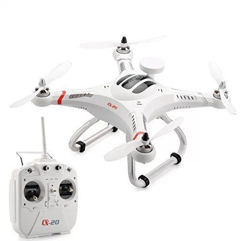
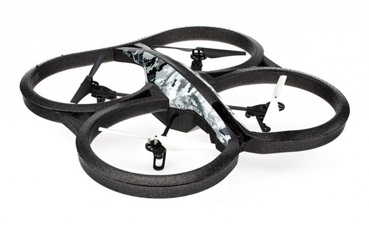
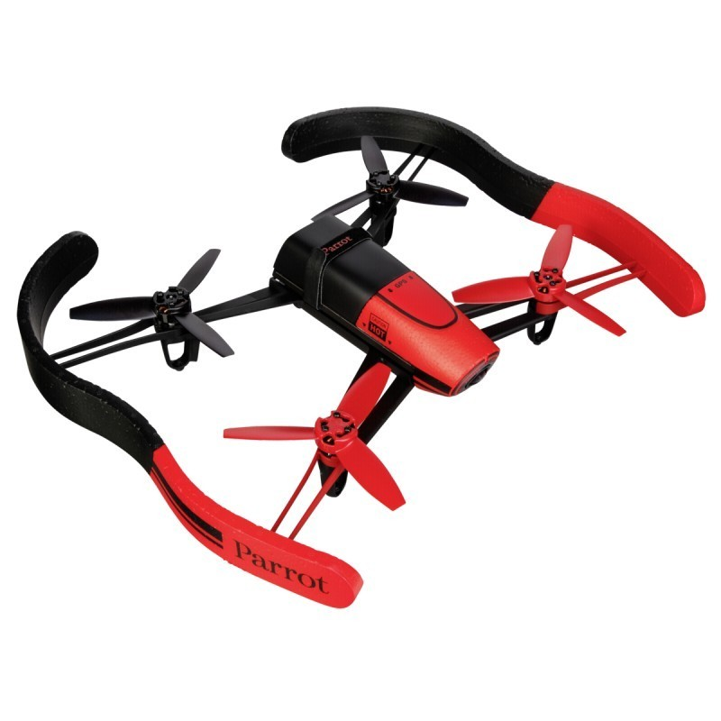
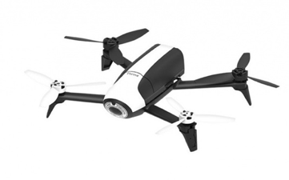

Cheerson CX-20

El CX-20 fue nuestro primer candidato. Este drone se cataloga como un drone profesional debido a su cantidad de funcionalidades y modos de vuelo. La primera idea fue de realizar el proyecto con este drone pero se abortó debido a que no daba al usuario una API para trabajar. Además, su comunicación se realiza por frecuencia de radio control y no por frecuencia Wi-fi, que era uno de nuestros objetivos.
Parrot AR 2.0

Este drone fue nuestro segundo candidato. Con él, se llegaron a realizar bastantes pruebas. Se había conseguido un drone que utilizará una comunicación mediante WiFi y que tuviera una API compatible con nuestro proyecto. Por el contrario, este drone al realizar pruebas no daba un vuelo muy estable, más bien todo lo contrario. Se descartó por esta última razón, no se podía realizar un vuelo en interiores con un drone que no tenía un vuelo estable.
Parrot Bebop 1

Este drone sigue la misma línea que el anteriormente citado. Es un drone del cual disponemos de una API abierta al usuario y con el que comunicarnos mediante Wi-Fi. Por el contrario, como el anterior, no logramos que tuviera un vuelo estable.
Parrot Bebop 2

Este drone fue nuestro elegido. Entre sus características están: